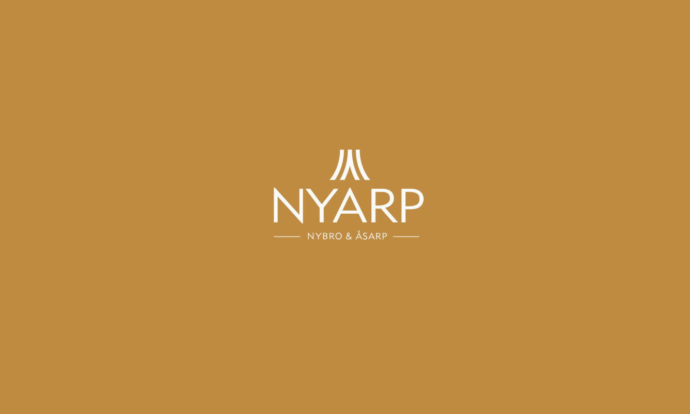
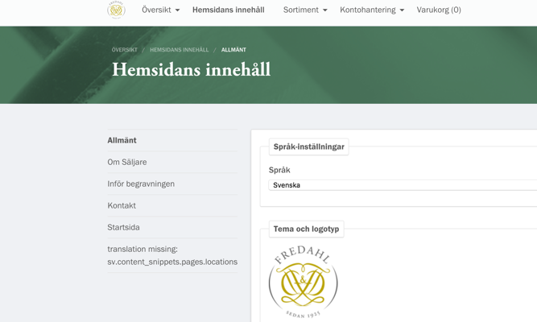
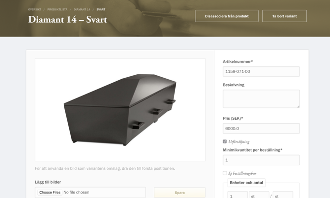
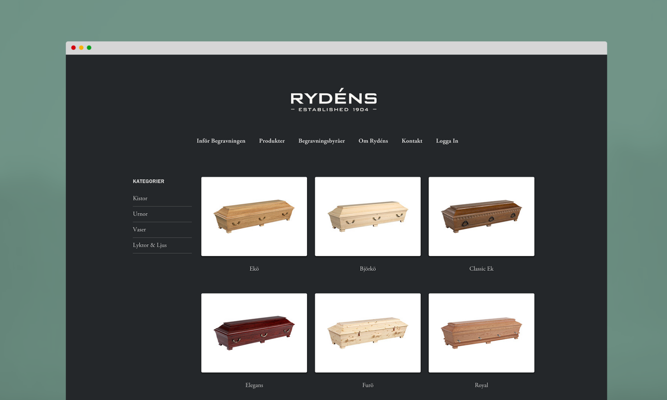
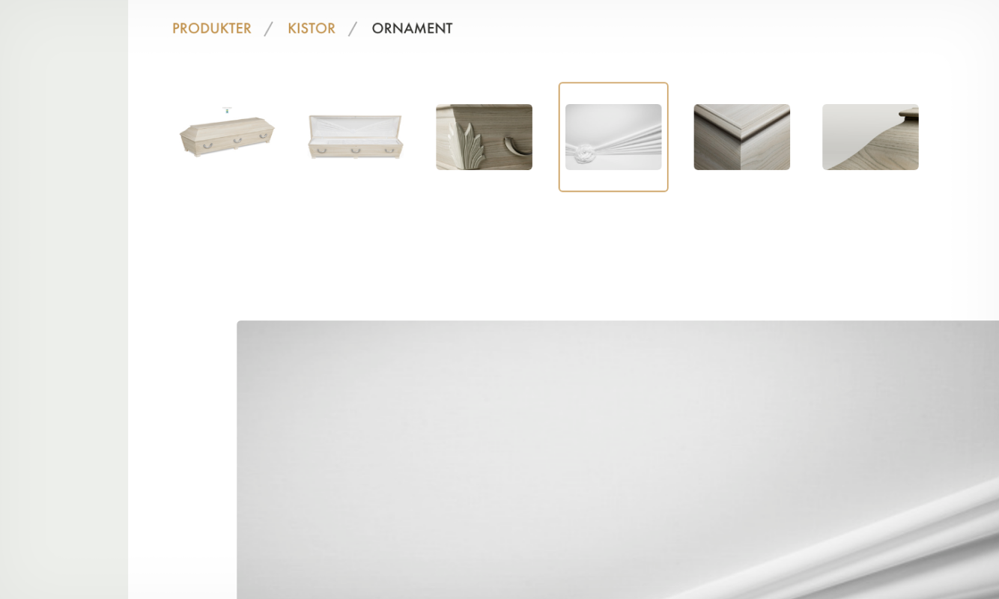

Nyarp
E-commerce Site
Nyarp, an umbrella organization for high quality manufacturers of coffins and urns, some dating as far back as 1904, contacted thoughtbot while I was working there. Nyarp needed a complete re-design of their e-commerce infrastructure and this was a unique opportunity for us to help build a well-functioning set of sites with end users in mind, from the very bottom up.

 Each tenant had a catalogue of products from which parlours could order. In turn, each parlour had a catalogue, each product a number of variants, and each variant a number of options.
Each tenant had a catalogue of products from which parlours could order. In turn, each parlour had a catalogue, each product a number of variants, and each variant a number of options.
To learn about the existing web application and its users, services and infrastructure we ran a product design sprint to map out use case scenarios and to define problems and needs. This workshop unveiled four major user groups and a long list of tasks for each one; Nyarp Administrators, Manufacturers, Funeral Parlors and Clients.

The overall task proved to be challenging since Nyarp needed to cater for all these user groups. The manufacturers need to manage, display and sell their products to Funeral Parlors. Funeral Parlors, in turn, need to order, display and sell services and products to Clients. And finally, the Clients need help finding the right parlors and understanding the process around funerals.

Building the product catalog was a complex yet important endeavor, since a product such as a coffin can have different materials, handles, decorations and details. This caused an exponential growth in complexity that was very exciting to tackle: a manufacturer delivers to multiple funeral parlors, each with different catalogs containing specific products with a number of variants. For every variant there is a set of features and each feature has a set of options.
Since Nyarp deals with the sensitive topic of people parting from their loved ones, there were a lot of considerations when working on the graphic style of the app. Following and developing the existing guidelines, I focused on a style that would be calm and elegant and dignified. A long tradition of quality craft and natural materials like wood and stone play an important part in the Nyarp product line and were thus used as a source of inspiration for the design.
Each manufacturer has its own brand identity, therefore the app was also developed to allow for different themes, which are set by the manufacturer administrator as they upload their logos and products.
 Different tenants were in need of different themes to accompany their brand.
Although the Nyarp and thoughtbot headquarters were situated in different cities, communication between the teams was extremely efficient and agile, thanks to daily use of designated chat rooms and task management tools. Another reason to the success of the project was that the people at Nyarp were enormously pleasant to work with.
